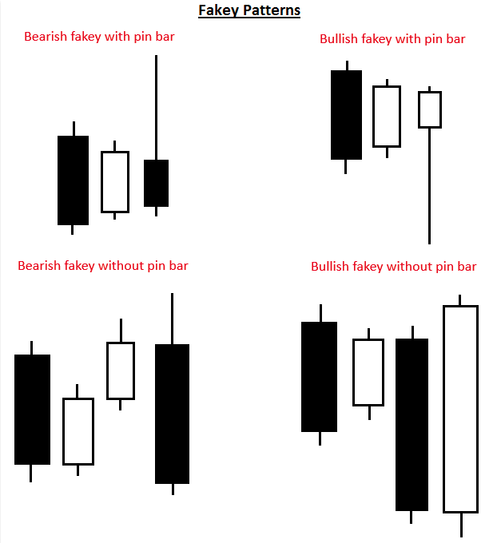
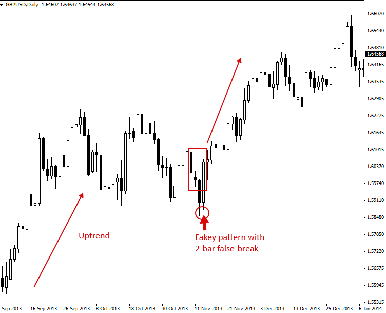

Fakey Trading Strategy (Inside Bar False Break Out)
The Fakey Pattern (Inside Bar False Break Out)
The Fakey pattern can be best be described as a “false-breakout from an inside bar pattern”. The Fakey pattern always starts with an inside bar pattern. When price initially breaks out from the inside bar pattern but then quickly reverses, creating a false-break, and closes back within the range of the mother bar or inside bar, we have a fakey pattern.
So, think of it like this: Inside Bar + False-Breakout = Fakey pattern.
A Fakey pattern can have a pin bar as the false-break bar or not. The false-break bar might also be a two-bar pattern where the first bar closes outside the inside bar / mother bar range and then the subsequent bar completes the false-break by closing back within the range of the mother bar and (or) inside bar.
Fakey’s are a very important and potent price action trading strategy because they can help us identify stop-hunting by the ‘big boys’ and provide us with a very good clue as to what price might do next. Learning how to trade the fakey pattern is something every price action trader should take seriously, it’s a critical weapon to have in your p.a. trading arsenal.
Let’s take a look at some examples of different types of Fakey patterns to clarify this price action strategy.

Note, in the above diagram of different Fakey patterns, there’s always an inside bar setup first, followed by the false-breakout of the inside bar. Fakey’s can vary slightly from the examples you see above, but the four examples above represent the most common types of Fakey trading strategies that you will encounter on the charts.
How to trade with Fakey Patterns
Fakey patterns can be traded in trending markets, range-bound markets or even against the trend form key chart levels. There are a lot of false-breakouts in the Forex market, so learning to trade with the Fakey pattern is very important since it can help you take advantage of and profit from these false breakouts, rather than falling victim to them as so many traders do.
The most common entries for a Fakey signal include the following:
- Enter as price breaks back past the inside bar or mother bar low or high, following the initial false-break. This can be an on-stop entry or an at market entry.
- If the Fakey pattern has a pin bar you can use a pin bar trade entry

Let’s take a look at several different examples of trading Fakey signals in various market conditions:
Trading Fakey’s in a Trending Market
The chart below shows us a good example of a Fakey buy signal with a pin bar as the false-break bar, in a trending market. Note in this signal that there were actually three inside bars within the mother bar structure. This is relatively common, and sometimes you will even see four inside bars within a mother bar before the false-break or ‘Fakey’ bar occurs.

The next chart shows us another good example of trading a Fakey pattern in a trending market. There was a clear uptrend in place prior to the formation of this Fakey pattern. Note that this particular Fakey was one with a 2-bar false-break, meaning instead of one bar as the false-break, the false-break occurred over two consecutive bars. This is another common form of the Fakey signal to watch for as you analyze and trade the markets:

Trading Fakey’s against the Trend from Key Chart Levels
Next, we are looking at an example of a counter-trend Fakey. That means it’s a Fakey that implies price might move against the recent / near-term daily chart momentum / trend. In this case, it was a bullish Fakey buy signal that formed at a key support level, following a move lower. Since this Fakey signal was so nice and obvious (well-defined) and it had the confluence of the key support level under it, it was a counter-trend Fakey worth taking:

Here’s another example of a counter-trend Fakey pattern. This time it was a bearish Fakey sell signal from a key resistance level. Note the market was clearly pushing higher just prior to the formation of this Fakey. Then, when the Fakey formed, it also false-broke above a key resistance level in the market, adding extra ‘weight’ to the probability of a move lower. We can see the dramatic sell-off that followed this bearish Fakey:

Tips on Trading the Fakey Pattern:
- The above Fakey examples do not include ‘every’ permutation of Fakey you will encounter, rather they are some of the more common ones. Just remember that if you have an inside bar pattern, followed by a false-breakout of that inside bar pattern, you probably have a Fakey pattern.
- The above point, does not mean that you should trade ‘every’ pattern that has the Fakey requirements discussed above. Whether or not you should take a particular Fakey depends on not only its formation, but also where it forms in the market, i.e., whether or not it has confluence and ‘makes sense’ within the underlying market picture / dynamics. As you gain training and education, experience and screen time price action trading, you’ll develop a better understanding of which Fakey’s (or other price action patterns) are worth trading and which are worth passing on.
- When beginning, stick to Fakey signals on the daily charts, as the daily chart signals will carry an overall higher degree of accuracy / reliability than lower time frame charts. Eventually, as you gain experience and confidence, you can work in 4 hour and 1 hour time frame Fakey’s.
Original source : https://priceaction.com/price-action-university/strategies/fakey/